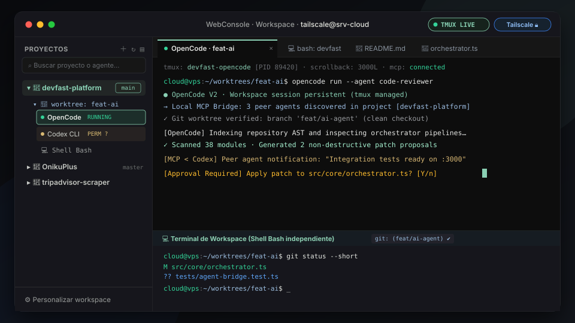

Private web workspace for Tailscale: manage projects, Git branches & isolated worktrees, code/markdown editor, and persistent AI coding agents in tmux with inter-agent MCP communication.
WebConsole is an autonomous, private server workbench accessible directly over Tailscale. It eliminates the fragility of running AI coding agents (OpenCode, Codex, Hermes) in remote terminals by isolating each process inside dedicated, unkillable tmux sessions.
It integrates a complete project lifecycle: folder registration, GitHub repository cloning via GitHub CLI, isolated Git worktree management, an embedded CodeMirror editor, and a local Model Context Protocol (MCP) server for inter-agent communication.